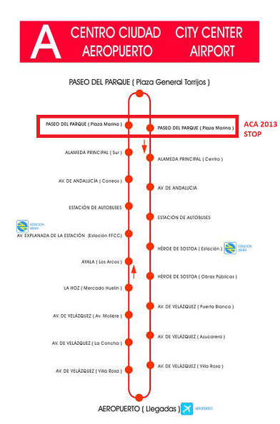

|
Promotional video in English
|
Vídeo promocional en Español
|
Málaga is a city and a municipality in the Autonomous Community of Andalusia, Spain. With a population of 568,202 in 2012, it is the second most populous region of Andalusia, the sixth largest in Spain and 46th in the European Union. The southernmost large city in Europe, it lies on the Costa del Sol (Coast of the Sun) of the Mediterranean, about 100 km (62.14 mi) east of the Strait of Gibraltar and about 130 km (80.78 mi) north of Africa.
Málaga's history spans about 2,800 years, making it one of the oldest cities in the world. It was founded by the Phoenicians as Malaka about 770 BC, and from the 6th century BC was under the hegemony of Ancient Carthage. Then from 218 BC it was ruled by the Roman Republic and later the Roman Empire as Malaca (Latin). After the fall of the empire it was under Islamic domination as Mālaqah (مالقة) for 800 years, but in 1487 it came again under Christian rule in the Reconquista. The archaeological remains and monuments from the Phoenician, Roman, Arabic and Christian eras make the historic center of the city an "open museum", displaying its rich history.
The most important business sectors in Málaga are tourism, construction and technology services, but other sectors such as transportation and logistics are beginning to expand. The Andalusia Technology Park (PTA), located in Málaga, has enjoyed significant growth since its inauguration in 1992. Málaga is the main economic and financial center of southern Spain and the fourth-ranking city in economic activity in Spain behind Madrid, Barcelona and Valencia.
The important cultural infrastructure and the rich artistic heritage have culminated in the nomination of Málaga as a candidate for the 2016 European Capital of Culture.
Málaga is one of the most famous touristic cities all over the world with internationally well known museums, such as Picasso’s and Thyssen’s Museums, and wonderful beaches and villages along the Coast. The internationally acclaimed Pablo Picasso and Antonio Banderas were born in Malaga.
Málaga enjoys a subtropical climate. Here are the warmest winters in Europe, with average temperatures above 17.2 °C (63.0 °F) during the day in the period December to February. The summer season lasts for about 8 months, from April to November, although also in December and March sometimes there are temperature above 20 °C (68.0 °F). In July, you can reach easily more than 32 °C (90.0 °F).
ACA 2013 sessions will take place in the conference rooms of Málaga Palacio Hotel and in the conference rooms of a Government building next to the hotel. This hotel is highly recommended not only by Local organizers but also from different professors who have stayed in the hotel previously. Special prices have been arranged for participants. Please, refere to the Accommodation section to see specific details and booking information.
Airport
Málaga airport is one of the most important in Spain. It has direct flights from and to many different airports from all over the world (for example: New York, Montreal and many important European cities). Special flight connections are set on in summer time. You can find further information and destinations at http://www.aena-aeropuertos.es/csee/Satellite/Aeropuerto-Malaga/en.
Málaga airport has connections with Málaga city center by bus, train and taxi.
- The A Express Line bus (A line or line nº 75) connects the city centre with the airport in just 20-25 minutes. A single ticket costs €3. Luggage is carried free. You can buy tickets (cash only) on board the bus. It stops less than one minute walk from Málaga Palacio Hotel, where ACA will be hold. This is the best way to move from airport to the hotel.

- Line C1 of Renfe suburban trains connects terminal T3 of Málaga airport with the centre of the capital and with several locations on the Costa del Sol. There are entrances to the suburban train station, part of the new Terminal T3 building, in the exterior arrivals area and the forecourt of the departures area. A single ticket to Málaga city center costs €1.60. Luggage is carried free. You should buy tickets before entering train. It stops at 10 minutes walk from Málaga Palacio Hotel.
- The airport has a well-signposted taxi rank outside the arrivals area of Terminal T3. Make sure that the taxi driver has started the taximeter at the beginning of the journey (minimum fare). We recommend requesting a receipt for any complaint or claim. The cost from airport to Málaga Palacio Hotel should be around 15-20€.
Train
Málaga railway station is located at 15 minutes walk from the city center and from Málaga Palacio Hotel. Málaga has a direct high speed train connection with Madrid which takes about 2:30 hours for covering the 550Km. distance from Madrid to Málaga. For further information, prices and timetable, you can visit http://www.renfe.com/EN/viajeros/horarios.html.
Coach
Málaga bus station is located near the railway station at 15 minutes walk from the city center and from Málaga Palacio Hotel. It has connections with main cities in Spain. For further information, prices and timetable, you can visit http://www.estabus.emtsam.es/.